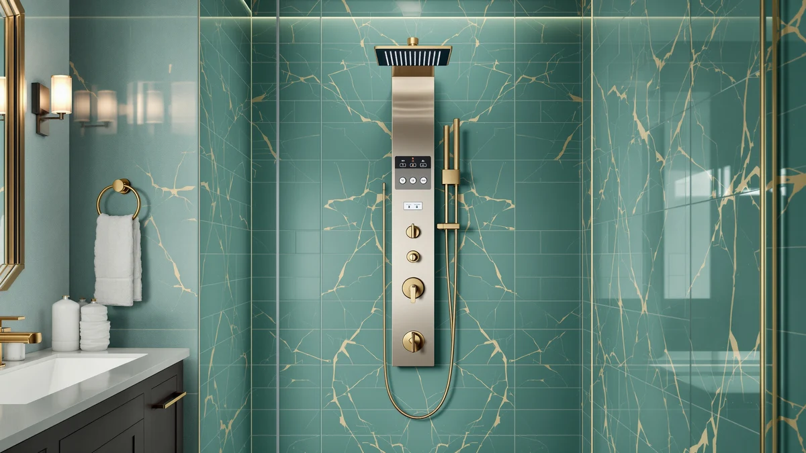

Best Shower Panels With a Tub Spout (2026): 8 Tub-and-Shower Combo Towers
Prices and picks verified as of September 2026. Independent, reader-supported reviews.


Quick Answer
A shower panel with tub spout combines a rainfall head, body jets and a dedicated bathtub filler on one wall-mounted tower, so a single valve runs both your bath and your shower. We compared eight of these combo towers on function count, build material and price, and the VEVOR Shower Panel System 5 covers all five functions, tub spout included, for the lowest price in the group.
Our pick: VEVOR Shower Panel System 5, $118.90 Check Price on Amazon
Bottom line: our top pick is the VEVOR Shower Panel System at $107.01. The best budget option is the AlenArt Shower Panel LED Shower Tower System with Rainfall at $123.05.
Things to Know Before You Buy
- Not every shower panel includes a tub spout. Plenty of towers stop at rainfall and body jets, so confirm the bathtub filler is built in before you buy, not sold as an add-on part.
- One valve, one function at a time. These towers route water through a single diverter, so switching to the tub spout shuts off the shower head. The MENATT Shower Tower Panel System is the lone exception, blending rainfall and jets into one 2-in-1 setting.
- How the LED is powered matters long term. The VEVOR Shower Panel 6 Shower generates its own light from water flow, so there is no battery to replace. Most of the rest run on 2 AA batteries you supply yourself.
- Stainless steel and brass outlast painted alloy. ROVOGO, MENATT and AlenArt all use stainless bodies with brass or copper valves, which resist the corrosion a humid shower stall causes over time.
- Plan on at least 40 PSI. Adding a tub spout to a rainfall-and-jets tower puts more demand on your home's water pressure, and every function on this list feels weaker on low-pressure plumbing.
A shower panel with tub spout solves a specific bathroom problem: instead of a separate tub filler and a wall-mounted shower head fighting for space, one tower handles rainfall, body jets and the bath fill from a single set of hot and cold lines. That matters most in a combo tub-shower stall, where retrofitting a standalone filler means opening the wall a second time.
The catch is that "shower panel" listings are not consistent about what they include. Some towers sold under nearly identical photos skip the tub spout entirely and expect you to keep your existing filler, and the only way to know for sure is to check the function count in the description before you buy. Price does not track the difference either. Our cheapest pick here has the tub spout built in, while some pricier towers elsewhere on Amazon do not.
We compared eight shower panel systems with tub spout ranging from $118.90 to $169.00, looking at how many functions each one packs in, what the body is made of, and how the diverter valve handles the switch between shower and bath. Below is how they stack up, the VEVOR Shower Panel System 5 leading on price and function count, along with the honest trade-offs on every one of them.
Why You Should Trust Us
I am Ilane Tall, and I cover showers, faucets and bathroom fixtures for Best Shower Panels. Combo towers that fold a bathtub spout into a shower panel are a narrower category than standard shower towers, and listings are inconsistent about whether the spout is actually included, so I read past the marketing photos and check the stated function count on every unit before it makes this list.
Nobody paid for placement here. These picks come from comparing specs, materials and verified owner reviews across every shower panel with tub spout we found in this price range. When a tower has a real limitation, whether that is a battery-dependent LED, a single-jet diverter, or a finish that shows water spots, we say so, because a wall-mounted fixture is something you live with for years, not a purchase you replace on a whim.
How We Picked
We started with one non-negotiable filter: to qualify for this list, a tower needed a bathtub spout built into the panel itself, not sold as a separate accessory. That ruled out a large share of otherwise appealing rainfall-and-jets towers that stop at the shower and leave your existing tub filler untouched.
From there we compared function count, so a tower offering rainfall, waterfall, multiple massage jets, a handheld and the tub spout ranked ahead of a bare-bones three-function unit at a similar price. We weighed build material, favoring stainless steel and brass valve components over unspecified alloy, and we looked at how each brand's LED lighting is powered, since a hydroelectric design has one less part that can fail. Price stayed a factor throughout, and every pick here lands between $118.90 and $169.00, a tight enough range that the differences come down to features and build rather than budget versus flagship.
How We Compared
We evaluated each shower panel with tub spout on the same three points a buyer actually cares about. First, function count and what the tub spout mode does on its own, since a diverter that routes water cleanly between shower and bath matters more day to day than an extra massage jet. We noted where a brand, like MENATT's 2-in-1 head, combines functions differently from the rest of the field.
Second, we compared build: stainless steel bodies with brass or copper valves against panels that do not specify their material, because a shower tower sits in constant humidity and the metal underneath the finish is what determines how long it lasts. Third, we checked how the LED lighting, where present, gets its power, since a hydroelectric unit that generates current from water flow has no battery to swap and no wiring to fail. We do not run a physical testing lab or invent star ratings; every spec, dimension and price here comes from the manufacturer listing or verified buyer reviews, and we say so when a figure is unconfirmed.
Our Picks

VEVOR Shower Panel System 5
What we like
- Full 5-in-1 layout with a dedicated bathtub spout, not an add-on part
- 18.1-inch top spray head covers both rainfall and waterfall modes
- Silicone nozzles resist clogging and wipe clear with a finger
- Lowest price of the eight towers we compared, at $118.90
Flaws but not dealbreakers
- Only 2 body massage jets, fewer than several rivals here
- Each mode runs on its own, so you cannot blend rainfall and jets together
- Silver finish shows water spots more readily than brushed nickel
| Material | — |
| Size | 2 Body Massage Jets |
This is a shower panel with tub spout built for anyone who wants the whole feature set without the flagship price tag. The tower packs rainfall, waterfall, two body massage jets, a handheld sprayer and a dedicated bathtub spout into one panel, and a simple knob lets you switch between them. The 18.1-inch top spray head is wide enough that both the rainfall and waterfall modes cover your full body instead of a narrow strip down the middle, and the 59-inch hose gives the handheld enough reach for rinsing the tub or the walls.
The tradeoff for that price is jet count. Two body massage jets is on the low end for this category, so if targeted muscle relief matters to you more than the overall function list, the VEVOR Shower Panel 6 Shower below adds more jets for a small premium. The silicone nozzles are a genuine plus, since you clear mineral buildup by rubbing them with a finger instead of soaking the head in vinegar. For a first shower-panel upgrade or a rental-friendly install, this is the pick that gets every function, tub spout included, for the least money.

FUZ Contemporary Shower Panel Tower
What we like
- Brass body with a brushed nickel finish built to resist bathroom corrosion
- Display screen shows both water temperature and shower duration
- Six functions, including LED waterfall, rainfall, handheld and the tub spout
- Multi-outlet switches let you pick your exact water-effect combination
Flaws but not dealbreakers
- The priciest tower in this comparison at $169.00
- Default temperature setting starts at 74 degrees Fahrenheit and needs adjusting each time
- The screen and switch layout takes a few showers to learn
| Material | — |
| Size | — |
FUZ builds this shower panel with tub spout around brass rather than the thinner stamped steel some rivals use, and the anti-corrosion brushed nickel surface is meant to handle a humid bathroom over years, not months. The display screen is the standout feature: it reads out your water temperature in Fahrenheit and tracks how long you have been showering, a detail none of the other seven towers here include. Between the rainfall head, LED waterfall, handheld, massage jets and the tub spout, you get six functions total, more than most of the field.
You pay for that at $169.00, roughly $30 to $50 more than most of the other towers we compared. Owners should expect a short learning curve too, since the multi-outlet switch layout controlling six functions is less intuitive than a single mode knob. If a built-in temperature and timer display is worth the premium to you, and you want brass construction over painted steel, this is the tower to buy. If you need only the tub spout and the standard functions, several cheaper picks below cover the basics for less.

ROVOGO LED Shower Panel Tower
What we like
- Stainless steel body resists corrosion and dents better than thin alloy
- Copper valve and ceramic cartridge behind the diverter for long-term reliability
- Rain shower head uses 60 rubber nozzles for full-body coverage without turning
- Battery-powered LED adds a soft blue glow without extra wiring
Flaws but not dealbreakers
- LED runs on batteries you supply, not a hydroelectric generator
- Waterfall mode uses more water than the rainfall setting, so it raises your water bill faster
- 4-jet layout sits in the middle of the pack rather than leading it
| Material | — |
| Size | — |
ROVOGO leans on its plumbing hardware to justify the price of this shower panel with tub spout. Where several competitors stay vague about what is behind the panel, ROVOGO specifies a copper valve and a ceramic cartridge diverter, the same components you would expect in a standalone bathroom faucet, wrapped in a heavy-duty stainless steel body. The rain shower head spreads water through 60 rubber nozzles for coverage across your whole body, and the waterfall setting handles rinsing shampoo quickly when you need it.
The LED lighting is a nice touch rather than a functional upgrade. It runs on batteries, so it is one more part to maintain compared with the hydroelectric VEVOR below, and the soft blue glow is purely atmospheric. Reviewers consistently note the waterfall mode draws noticeably more water than rainfall, so expect your utility bill to reflect heavy waterfall use. For $129.99, the combination of stainless construction and named valve components makes this a reasonable middle-of-the-road pick.

MENATT Shower Tower Panel System
What we like
- 2-in-1 head combines rainfall and massage jets in a single mode
- Rain shower uses 60 rubber nozzles for full-body coverage
- Brushed nickel finish resists water spots better than plain chrome
- Waterfall tub spout rounds out a complete 5-in-1 layout
Flaws but not dealbreakers
- You cannot run rainfall and jets separately, only the combined 2-in-1 setting
- Battery-powered LED lighting needs 2 AA batteries not included in the box
- Mid-pack price for a tower without a temperature display or hydroelectric LED
| Material | — |
| Size | — |
Most shower panels with tub spout make you pick one function at a time, but MENATT's 2-in-1 head lets rainfall and massage jets run together, which is the detail that sets this tower apart from the other seven. If you want the gentle overhead rain and the muscle-targeting jets at once rather than switching back and forth, this is the only pick on this list built for that. The rain shower still spreads through 60 rubber nozzles on its own for full coverage when you want rainfall by itself.
The combined mode is also the one limitation to know going in: you lose the option to run rainfall and jets as separate settings, so if you prefer them isolated, look at the VEVOR or ROVOGO towers instead. The LED lighting runs on two AA batteries you provide yourself, and at $139.99 it lands squarely in the middle of the price range without adding a temperature screen or a self-powered LED to offset that. For the combined-mode feature alone, it earns its spot.

VEVOR Shower Panel 6 Shower
What we like
- Hydroelectric LED generates its own power from water flow, no batteries needed
- 6-in-1 layout with two angle-adjustable jets plus six additional spray massage jets
- 18.1-inch top spray head handles both rainfall and waterfall modes
- Only $12 more than the cheapest tower on this list
Flaws but not dealbreakers
- Self-powered LED needs decent water flow to light up brightly
- Each of the six modes still runs independently, not in combination
- Brushed silver finish requires occasional wiping to stay spot-free
| Material | — |
| Size | 8 Massage Jets+LED |
This VEVOR model upgrades the brand's own budget tower with a feature that solves the biggest long-term weakness of LED shower panels: the light is hydroelectric, meaning a built-in brass generator produces power from the water running through the panel itself. There is no battery to buy, swap or forget about years down the line. On top of that, this shower panel with tub spout adds two angle-adjustable massage jets and six additional spray jets, for eight jets total, more than any other tower we compared.
The self-powered LED does need reasonable water flow to glow at full brightness, so homes with weak pressure may notice a dimmer light along with the softer spray that low pressure causes on any of these towers. Each of the six functions, rainfall, waterfall, the two jet modes, tub spout and handheld, still runs one at a time rather than blending together. At $130.99, the jump from VEVOR's cheaper five-function model buys you a real upgrade in the LED's power source and a meaningfully higher jet count.

MENATT LED Shower Panel Tower
What we like
- Precision high-grade stainless steel frame with a brass mixing valve and diverter
- Matte black finish hides water spots better than chrome or brushed nickel
- 5-in-1 layout with waterfall, rainfall, 3 massage jets, handheld and tub spout
- Simple red switch turns the battery LED lighting on and off
Flaws but not dealbreakers
- 2 AA batteries for the LED are not included in the box
- 3 massage jets is fewer than the VEVOR Shower Panel 6 Shower's eight
- Matte black can show mineral spotting on hard water if not rinsed down
| Material | — |
| Size | — |
This MENATT tower is the matte black option among the eight shower panels with tub spout we compared, built around a precision stainless steel frame and a brass mixing valve and diverter. The dark finish suits a modern or industrial bathroom better than the brushed nickel and silver towers that dominate this category, and it has a practical upside too: matte surfaces show water spots less readily than polished chrome. The five-function layout covers waterfall, rainfall, three massage jets, a handheld and the tub spout, controlled by a simple red switch for the LED.
Three massage jets puts it behind the VEVOR Shower Panel 6 Shower on jet count, so if targeted pressure is your priority over finish, that tower gives you more for less money. The LED batteries are not included, a minor added cost at setup. Owners report the black coating needs an occasional wipe-down to prevent hard-water mineral spots from building up, which is true of most dark bathroom fixtures. At $139.99, this is the pick for anyone prioritizing a black finish over jet count.

ROVATE LED Shower Panel Tower
What we like
- 36 body massage jets, the highest count of any tower on this list
- Wide overhead head switches between rainfall and waterfall modes
- All functions work independently, so each one gets full water pressure
- Modern black surface finish stands out against typical white tile
Flaws but not dealbreakers
- 2 AA batteries for the LED lighting are not included
- 36 jets need strong home water pressure to feel powerful rather than misty
- No temperature display, unlike the pricier FUZ tower above
| Material | — |
| Size | — |
If jet count is what you care about most in a shower panel with tub spout, ROVATE leads the field here with 36 body massage jets, more than four times what our budget VEVOR pick offers. The panel keeps every function, LED rainfall, waterfall, the massage jets, the handheld wand and the tub spout, running independently so none of them has to share water pressure with another. The black surface finish is a deliberate style choice too, standing out against the brushed nickel and silver towers that make up most of this list.
That many jets asks more of your home's plumbing than a simpler tower does. On weaker water pressure, 36 jets spread the flow thin and can feel more like a fine mist than a firm massage, so this pick rewards a strong supply line more than most. There is no temperature readout here, which keeps the control layout simple but means you will not get the FUZ tower's shower-time tracking. At $139.99, this is the jet-focused choice among towers that also include a tub spout.

AlenArt Shower Panel LED Shower
What we like
- Pressure-balance valve cartridge protects against sudden hot or cold spikes
- Thickened stainless steel with a brushed nickel finish compared against salt spray corrosion
- Temperature display helps you dial in the water before stepping in
- Second-lowest price on this list at $124.08
Flaws but not dealbreakers
- Listing does not specify an exact massage jet count
- Brass connectors add weight, so the install benefits from a second pair of hands
- Temperature display adds a control to learn alongside the six shower modes
| Material | — |
| Size | — |
AlenArt's case for this shower panel with tub spout is safety-first. The pressure balance valve cartridge is designed to catch sudden swings in hot or cold water pressure elsewhere in the house, the kind of spike that causes a scald when someone flushes a toilet or starts the dishwasher mid-shower. That is a useful feature for a household with young kids or older adults, and it is not something every tower on this list specifies. The stainless body carries a thickened brushed nickel finish that the brand states passed salt spray corrosion testing, on top of a temperature display and six shower modes including rainfall, waterfall, jets, handheld and the tub spout.
The listing does not break out an exact jet count the way VEVOR and ROVATE do, so if maximum massage pressure is the deciding factor, compare those two first. The brass connectors that reinforce the plumbing joints add real weight to the tower, and most owners find the wall-mount install goes faster with two people holding it level. At $124.08, this is the value pick if scald protection matters more to your household than raw jet count.
Quick Comparison
All eight shower panels with tub spout from this guide, side by side on price and standout feature.
| Product | Material | Price | Rating | Best for | Get it |
|---|---|---|---|---|---|
| VEVOR Shower Panel System 5 | — | $118.90 | 4 | Best budget 5-in-1 | View on Amazon → |
| FUZ Contemporary Shower Panel Tower | — | $169.00 | 4 | Best temperature display | View on Amazon → |
| ROVOGO LED Shower Panel Tower | — | $129.99 | 4 | Best valve hardware | View on Amazon → |
| MENATT Shower Tower Panel System | — | $139.99 | 4 | Best combined rainfall+jets | View on Amazon → |
| VEVOR Shower Panel 6 Shower | — | $130.99 | 4 | Best hydroelectric LED | View on Amazon → |
| MENATT LED Shower Panel Tower | — | $139.99 | 4 | Best matte black finish | View on Amazon → |
| ROVATE LED Shower Panel Tower | — | $139.99 | 4 | Best jet count | View on Amazon → |
| AlenArt Shower Panel LED Shower | — | $124.08 | 4 | Best scald protection | View on Amazon → |
The Competition
We ruled out several shower panel towers for the simplest reason possible: no tub spout. The Blue Ocean 52" Aluminum Shower Panel Tower charges $369.00 for a rainfall head, 8 massage jets and a temperature display, more than double the price of most of our picks, yet its listing never mentions a bathtub filler. A premium price does not guarantee the one feature this whole comparison is built around.
The ELLO&ALLO Stainless Steel Shower Panel Tower System has the opposite problem. At $229.97 it is a well-built stainless tower with rainfall, body massage jets and a handheld, but like the Blue Ocean it stops short of a tub spout. So does the gotonovo Rainfall Bathroom Shower System at $119.99, which pairs a 10-inch rainfall head with a handheld spray and a pressure-balanced valve but leaves the bathtub filler out entirely. Both are worth a look if you only need a shower upgrade, but neither belongs on a list built around the tub spout.
The closest call was the TSIBOMU 5 in 1 Shower Panel Tower System at $125.99, which does include a tub spout alongside rainfall, waterfall, 3 adjustable body jets and battery LED lighting. We left it off this list because it duplicates the VEVOR Shower Panel System 5 almost feature for feature at a similar price, without a distinguishing build detail, jet count or power source to set it apart from the picks already here.
Frequently Asked Questions
Do all shower panel systems include a tub spout, or is it a separate part?
No. Plenty of shower panel towers only cover rainfall, waterfall and body jets, and leave the bathtub filler out entirely. Every system on this list builds the tub spout into the panel itself, so check the function count on any tower you are considering elsewhere before you assume a bath filler is included.
Can I run the tub spout and the shower head at the same time?
Generally no. These panels use a single diverter valve to route water to one function at a time, so switching to the tub spout shuts off the overhead shower and vice versa. The MENATT Shower Tower Panel System is the exception here, since its body jets and rainfall head share a combined 2-in-1 mode, but the tub spout still runs on its own.
What water pressure does a shower panel with a tub spout need?
Plan on at least 40 PSI so the rainfall head and body jets still feel strong once the tub spout is added to the mix. Manufacturers do not publish a minimum pressure for most of these towers, and owners on weaker home plumbing consistently report a limp spray, so this is worth checking before you buy.